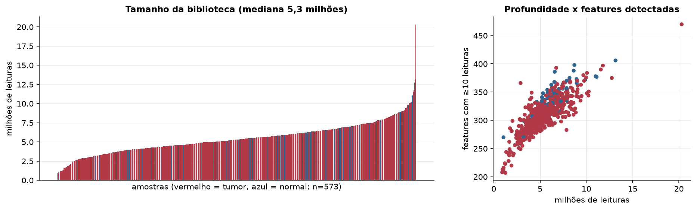
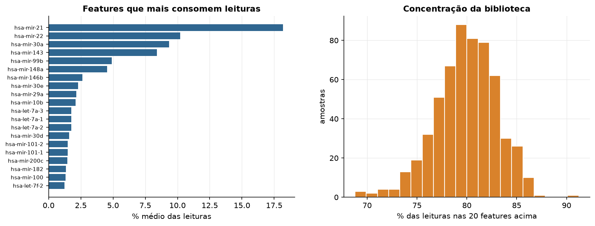
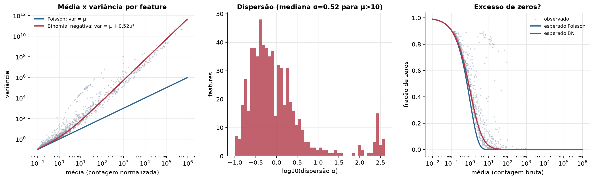
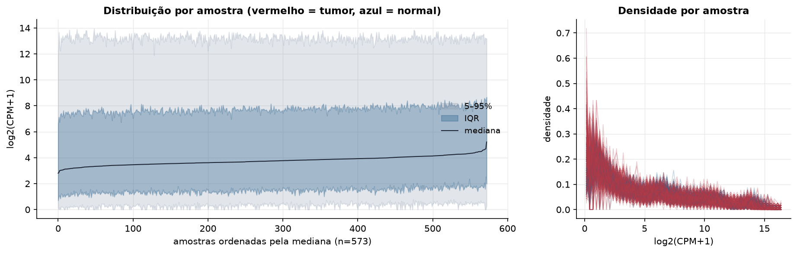
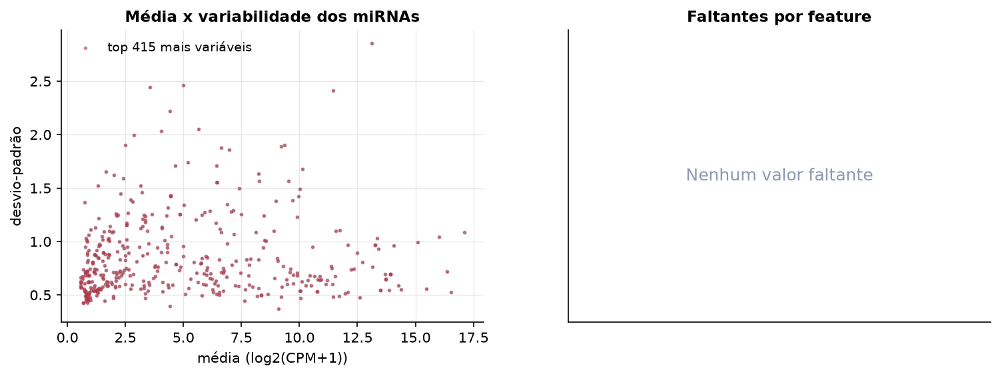
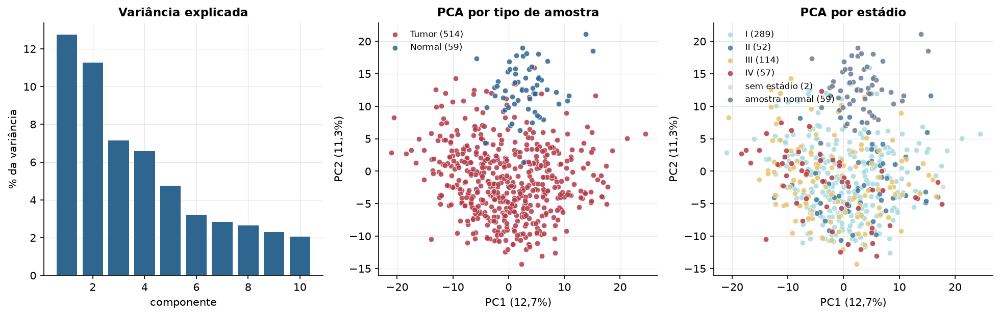
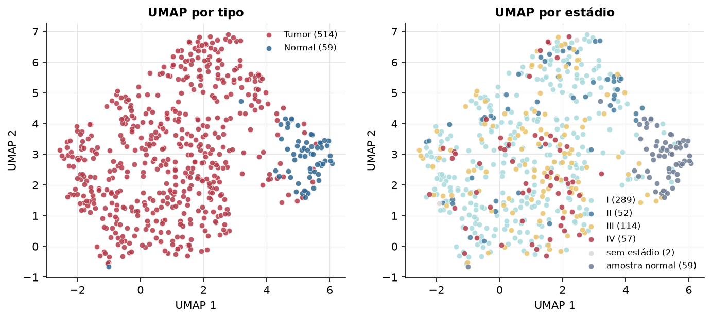
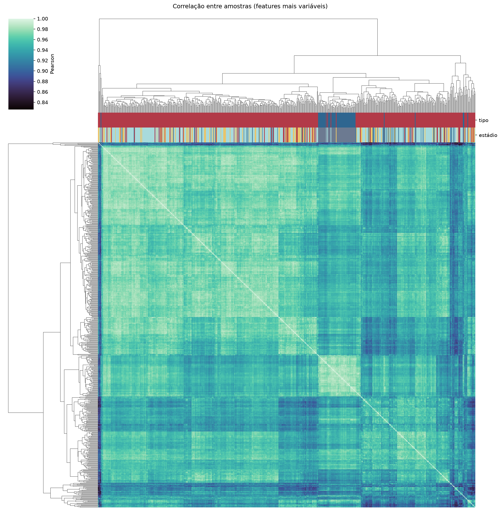
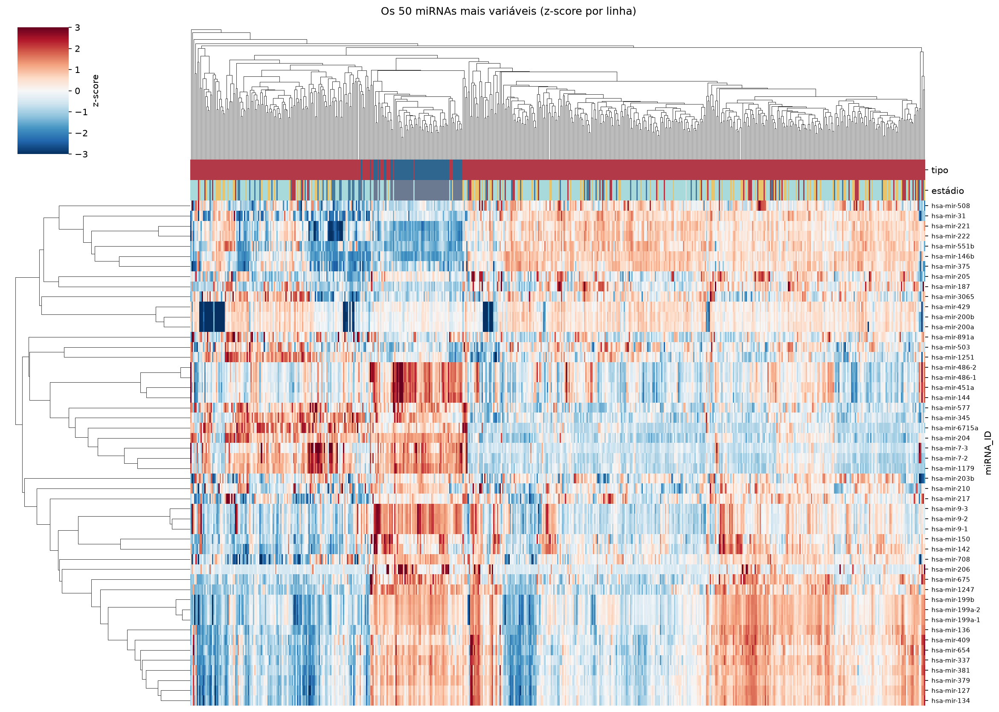
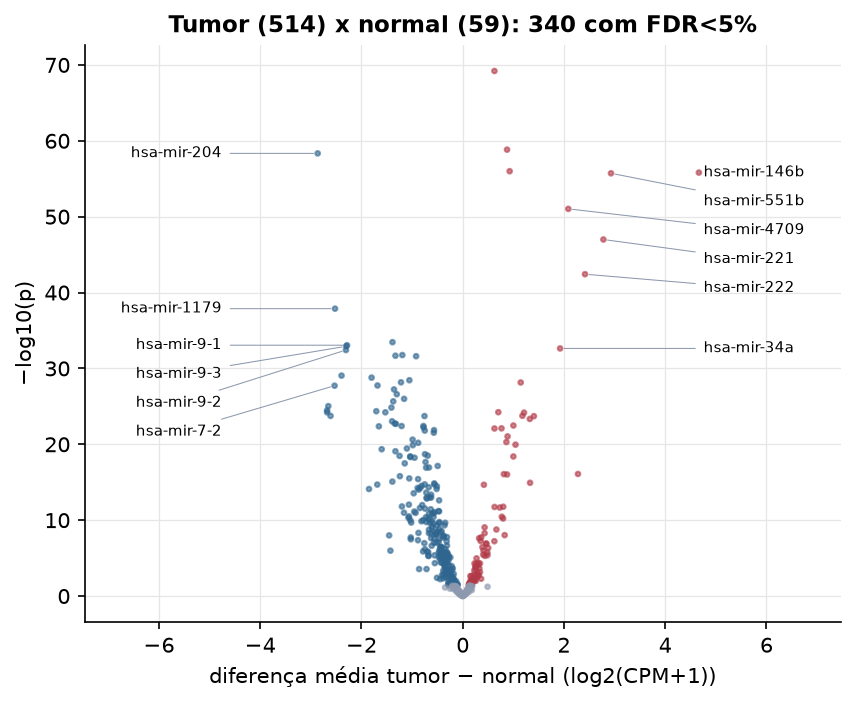

THCA · miRNA-seq: contagens brutas (GDC)
BCGSC miRNA Profiling (miRBase v21) · gerado em 22/10/2026 05:13
5,3 Mtamanho mediano
0,52dispersão mediana α
415miRNAs
514amostras tumorais
59amostras normais
0,0%valores faltantes
Fonte: API do GDC (BCGSC miRNA Profiling)
Principais resultados
- Bibliotecas de 0,9 a 20,3 milhões de leituras (mediana 5,3). 1.030 de 1.881 features têm leitura em pelo menos 10% das amostras.
- A variância cresce bem acima da média: a dispersão mediana da binomial negativa é α=0.52 (para features com média > 10). Isso descarta um modelo Poisson e indica binomial negativa (ou Poisson-lognormal) na verossimilhança.
- A fração de zeros é compatível com a binomial negativa (diferença mediana -0,9%); inflação de zeros não parece necessária.
- Em média 80,0% das leituras de cada amostra vão para as 20 features mais abundantes.
- 415 miRNAs medidos em 573 amostras (514 tumorais e 59 normais); 0,0% dos valores estão faltando.
- Os dois primeiros componentes principais explicam 12,7% e 11,3% da variância das features mais variáveis.
- Correlação mediana entre amostras: 0,96.
- Amostras com correlação muito abaixo das demais (possíveis outliers técnicos): TCGA-BJ-A291-01, TCGA-EL-A3GV-01, TCGA-EL-A3GZ-11, TCGA-EM-A3FQ-01, TCGA-EM-A3AP-01.
- Tumor x normal: 340 miRNAs diferentes com FDR < 5% (90 maiores no tumor, 250 maiores no normal; 59 pacientes têm o par tumor-normal).
- Mais aumentados no tumor: hsa-mir-6860, hsa-mir-7156, hsa-mir-934, hsa-mir-146b, hsa-mir-551b, hsa-mir-4709, hsa-mir-221, hsa-mir-222.
- Mais reduzidos no tumor: hsa-mir-204, hsa-mir-1179, hsa-mir-195, hsa-mir-9-1, hsa-mir-9-3, hsa-mir-9-2, hsa-mir-152, hsa-mir-3074.
- Associações clínicas com p < 0,05 nos componentes principais: PC1 com estádio (p=8.2e-07); PC3 com estádio (p=7.7e-07); PC2 com sobrevida (p=0.042).
Biblioteca


Sobredispersão e zeros

Exploração em log2(CPM+1)
Features com CPM ≥ 1 em pelo menos 20% das amostras (415 features).
Distribuição dos valores


Estrutura das amostras




Tumor x normal

Features mais diferentes entre tumor e normal
| miRNA_ID | diferenca_tumor_menos_normal | t | p | fdr |
|---|---|---|---|---|
| hsa-mir-6860 | 0.626 | 20.45 | 6.3e-70 | 2.61e-67 |
| hsa-mir-7156 | 0.875 | 18.37 | 1.46e-59 | 3.03e-57 |
| hsa-mir-204 | -2.865 | -22.114 | 4.55e-59 | 6.29e-57 |
| hsa-mir-934 | 0.927 | 17.874 | 1.01e-56 | 1.05e-54 |
| hsa-mir-146b | 4.664 | 25.582 | 1.54e-56 | 1.28e-54 |
| hsa-mir-551b | 2.929 | 23.358 | 1.92e-56 | 1.32e-54 |
| hsa-mir-4709 | 2.086 | 26.882 | 9.35e-52 | 5.54e-50 |
| hsa-mir-221 | 2.778 | 23.688 | 1.02e-47 | 5.29e-46 |
| hsa-mir-222 | 2.415 | 21.459 | 3.8e-43 | 1.75e-41 |
| hsa-mir-1179 | -2.523 | -20.234 | 1.33e-38 | 5.51e-37 |
| hsa-mir-195 | -1.388 | -18.164 | 3.46e-34 | 1.31e-32 |
| hsa-mir-9-1 | -2.286 | -18.891 | 8.71e-34 | 3.01e-32 |
| hsa-mir-9-3 | -2.301 | -18.872 | 1.2e-33 | 3.84e-32 |
| hsa-mir-34a | 1.923 | 20.294 | 2.32e-33 | 6.88e-32 |
| hsa-mir-9-2 | -2.308 | -18.696 | 3.79e-33 | 1.05e-31 |
| hsa-mir-152 | -1.193 | -16.507 | 1.73e-32 | 4.49e-31 |
| hsa-mir-3074 | -1.329 | -17.168 | 2.1e-32 | 5.13e-31 |
| hsa-mir-28 | -0.921 | -18.128 | 2.45e-32 | 5.65e-31 |
| hsa-mir-1247 | -2.394 | -15.383 | 8.85e-30 | 1.93e-28 |
| hsa-mir-379 | -1.8 | -13.984 | 1.62e-29 | 3.36e-28 |
| hsa-mir-139 | -1.054 | -14.061 | 3.59e-29 | 7.09e-28 |
| hsa-mir-190a | -1.219 | -15.529 | 6.8e-29 | 1.28e-27 |
| hsa-mir-181a-2 | 1.146 | 16.177 | 7.15e-29 | 1.29e-27 |
| hsa-mir-138-1 | -1.684 | -15.665 | 1.77e-28 | 3.06e-27 |
| hsa-mir-7-2 | -2.531 | -15.611 | 1.88e-28 | 3.12e-27 |
| hsa-mir-214 | -1.357 | -14.267 | 5.87e-28 | 9.37e-27 |
| hsa-mir-153-2 | -1.303 | -15.186 | 2.51e-27 | 3.86e-26 |
| hsa-mir-100 | -1.158 | -14.624 | 1.02e-26 | 1.51e-25 |
| hsa-mir-337 | -1.373 | -13.416 | 2.18e-26 | 3.12e-25 |
| hsa-mir-451a | -2.655 | -15.828 | 9.34e-26 | 1.29e-24 |
Associação com variáveis clínicas
p-valores da associação dos três primeiros componentes principais (só tumores) com estádio (Kruskal-Wallis), sexo (Mann-Whitney), idade (Spearman) e sobrevida global (Cox univariado).
| estádio (Kruskal) | sexo (Mann-Whitney) | idade (Spearman) | sobrevida OS (Cox) | |
|---|---|---|---|---|
| PC1 (13,7%) | 8.2e-07 | 0.923 | 0.35 | 0.171 |
| PC2 (8,2%) | 0.943 | 0.276 | 0.083 | 0.042 |
| PC3 (7,5%) | 7.74e-07 | 0.866 | 0.85 | 0.2 |